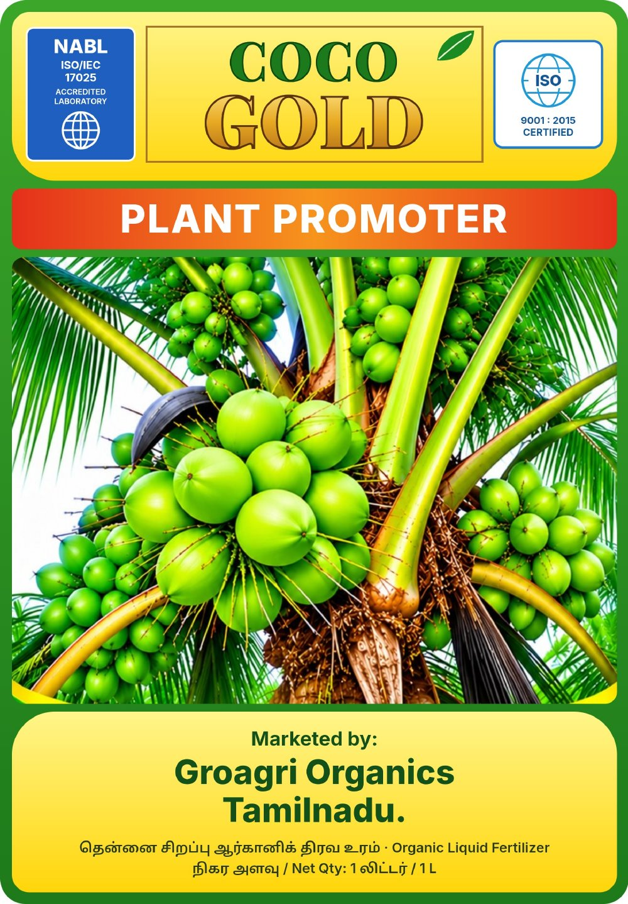

Plant Promoter
Coco Gold
Coconut Special Organic Liquid Fertilizer
Benefits: Reduces button shedding; improves nut set, size and yield; keeps fronds green and strong.
MethodSoil drench
Dosage100 ml in 1 L water
IntervalOnce every 30 days
Directions for Use
- Shake well before use.
- Mix the dose in clean water.
- Apply in the early morning or evening.
Precautions
- Keep away from children and pets.
- Not for human or animal consumption.
- Store in a cool, dry place away from sunlight.
| MRP | ₹850 / Litre |
|---|---|
| Net Qty | 1 Litre / 1 L |
| Shelf Life | 3 Years from manufacture |
| Manufactured by | Mazhaithuli Organics |
| Marketed by | Groagri Organics |
| FCO Licence No. | க.எண். உரம்1/95384/2026 |